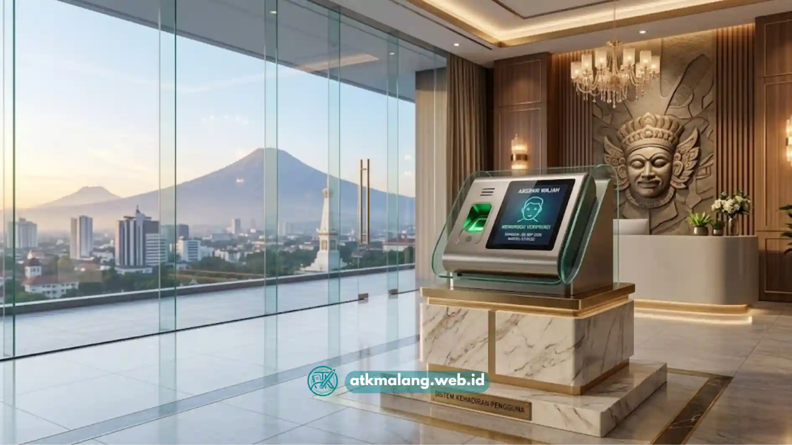

Bagi kantor di Malang yang sedang mempertimbangkan sistem presensi baru, pertanyaan mana yang lebih baik antara mesin absensi sidik jari dan wajah sering muncul.
Kedua metode sama-sama berbasis biometrik, tetapi memiliki karakteristik akurasi, kecepatan, dan kenyamanan penggunaan yang berbeda tergantung kondisi kerja di lapangan.
- Sidik jari umumnya lebih terjangkau namun sensitif terhadap kondisi jari yang basah atau kotor.
- Absensi wajah lebih higienis karena tanpa sentuhan langsung ke perangkat.
- Kecepatan pemindaian wajah cenderung lebih cepat pada antrean karyawan yang padat.
- Faktor lingkungan kerja di Malang, seperti kelembapan dan aktivitas lapangan, dapat memengaruhi pilihan metode.
- Kombinasi keduanya bisa menjadi opsi bagi kantor yang mengutamakan keamanan berlapis.
Daftar Isi
Apa Perbedaan Utama Mesin Absensi Sidik Jari dan Wajah?
Perbedaan utama terletak pada cara kerja verifikasinya, mesin absensi sidik jari memindai pola guratan jari melalui sentuhan langsung ke sensor, sedangkan mesin absensi wajah menggunakan kamera untuk mengenali fitur wajah tanpa perlu kontak fisik.
Sidik jari telah lebih lama digunakan dan teknologinya relatif matang, sehingga harga perangkatnya cenderung lebih terjangkau sebagai bagian dari pengadaan Alat Tulis Kantor dan elektronik bisnis Anda.
Absensi wajah merupakan teknologi yang lebih baru dan umumnya membutuhkan kamera beresolusi memadai serta pencahayaan yang cukup agar hasil pemindaian akurat.
Mana yang Lebih Akurat, Sidik Jari atau Wajah?
Tingkat akurasi kedua metode ini sebenarnya sama-sama tinggi apabila perangkat digunakan pada kondisi ideal, namun faktor lingkungan dapat memengaruhi performa masing-masing secara berbeda.
Pada mesin sidik jari, akurasi dapat menurun apabila jari karyawan basah, kotor, terluka, atau mengalami perubahan tekstur akibat pekerjaan fisik seperti di lapangan atau area produksi pabrik.
Sebaliknya, mesin absensi wajah dapat mengalami penurunan akurasi apabila pencahayaan ruangan kurang memadai, karyawan menggunakan masker tebal, atau posisi kamera tidak sejajar dengan wajah pengguna. Kondisi lingkungan yang cenderung lembap di pagi hari di Malang bisa menjadi pertimbangan tersendiri bagi kantor yang menggunakan sidik jari.
Bagaimana Perbandingan Kecepatan dan Efisiensi Antrean?
Dari sisi kecepatan, absensi wajah umumnya unggul karena karyawan tidak perlu menempelkan jari secara presisi ke sensor dan proses pemindaian dapat dilakukan hanya dengan berdiri di depan kamera dalam jarak tertentu.
Mesin sidik jari membutuhkan waktu verifikasi yang sedikit lebih lama karena posisi jari harus tepat menyentuh sensor agar pola guratan dapat terbaca dengan baik oleh sistem.
Pada kantor dengan jumlah karyawan besar yang melakukan presensi pada rentang waktu yang sama, perbedaan kecepatan ini dapat berdampak pada panjangnya antrean di depan mesin absensi setiap pagi.

Mesin absensi wajah memberikan solusi yang higienis tanpa sentuhan langsung ke perangkat.Kelebihan dan Kekurangan Mesin Absensi Sidik Jari
Kelebihan utama mesin sidik jari adalah harga perangkat yang relatif terjangkau, teknologi yang sudah teruji lama, dan proses instalasi yang umumnya lebih sederhana dibanding sistem berbasis kamera.
Kekurangannya, metode ini memerlukan sentuhan langsung ke sensor sehingga kurang higienis dibanding metode tanpa kontak, serta rentan mengalami gangguan pembacaan pada kondisi jari tertentu seperti basah, kotor, atau memiliki luka.
Kelebihan dan Kekurangan Mesin Absensi Wajah
Kelebihan utama mesin absensi wajah adalah proses verifikasi tanpa sentuhan yang lebih higienis, kecepatan pemindaian yang cenderung lebih cepat, serta kesan modern yang sesuai untuk kantor dengan citra profesional.
Kekurangannya, perangkat ini umumnya membutuhkan investasi awal yang lebih besar dibanding sidik jari, serta membutuhkan kondisi pencahayaan yang memadai agar hasil pemindaian tetap akurat, terutama pada area kerja dengan pencahayaan minim.
Mana yang Lebih Cocok untuk Kantor di Malang?
Pemilihan metode yang paling sesuai untuk kantor di Malang sebaiknya disesuaikan dengan karakteristik operasional masing-masing perusahaan, bukan sekadar mengikuti tren teknologi presensi terbaru.
Kantor dengan anggaran terbatas dan jumlah karyawan yang tidak terlalu besar dapat mempertimbangkan mesin sidik jari sebagai opsi yang lebih ekonomis. Sementara itu, kantor dengan volume karyawan besar yang mengutamakan kecepatan proses presensi dapat beralih ke mesin wajah.
Baik mesin absensi sidik jari maupun wajah memiliki kelebihan dan keterbatasan masing-masing. Pastikan pengadaan Alat Tulis Kantor dan perangkat elektronik Anda sejalan dengan efisiensi dan keamanan kerja di perusahaan.